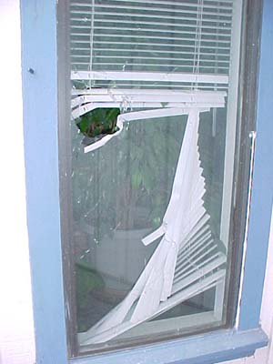

What Can Happen During A Remodel
After grinding with my small, flat grinding tool, I decided to go to
the local hardware
place and see if there was a better tool. They recommended a large,
heavy grinder meant for
flat grinding. I was thrilled. It seemed perfect for the job.
I got prepared for grinding -- headphones, mask and hair up in hat
-- and turned on the grinder.
It seemed ok, so I touched it to the concrete. From my point of view
it exploded in my hands.
There was a lot of noise and my arm hurt and I was holding nothing.
We unplugged everything and
I laid on the couch until my arm didn't hurt so much. My husband surveyed
the damage.
After seeing everything, I realize that I am very lucky to only have
a horrible bruise on my wrist...
I can't say yet what will happen with the counters. We might have the
entire thing repoured,
or maybe just the sink area. I'm pretty sure we'll have a concrete
person out to look. I don't think
that I will ever pick up a grinder again.
After the accident, I was told that grinding stones can explode. If
I had been told before hand, I'm
not sure if anything would have happened differently.
Please be careful. I commented to my husband that I was glad the stove
didn't get hit. He said
he was too, because the stone would have had to go through me...
This is the grinder after the accident. The grinding stone exploded
off the tool.
Here are the pieces of the grinding tool that flew off when they
touched the concrete. We found the fourth part later outside the broken
window.
This is the spot in the concrete where the grinder touched down
and then seemingly exploded.

One piece went through the window.
One piece put a hole in the kitchen wall.
I think if the metal hadn't been there it might have gone through
the siding...
It had to get the faucet, too. The one thing I picked out for the
kitchen....
Unfortunately, in getting the faucet, it seemed to have put too
much stress on the area around the sink and a lot of the concrete gave
way.